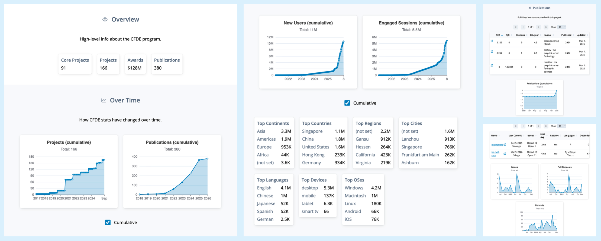

Ethan M. Lange 0000-0001-7075-4287
Department of Biomedical Informatics, University of Colorado Anschutz Medical Campus, Aurora, CO, USA 80045
· Funded by Grant U54OD036472
Vikram Adithya Ganesh 0009-0009-2056-2696
· techvik
Department of Biomedical Informatics, University of Colorado Anschutz Medical Campus, Aurora, CO, USA 80045
· Funded by Grant U54OD036472
Faisal Alquaddoomi 0000-0003-4297-8747
· falquaddoomi
Department of Biomedical Informatics, University of Colorado Anschutz Medical Campus, Aurora, CO, USA 80045
· Funded by Grant U54OD036472
David Mayer 0000-0002-6056-9771
· the-mayer
Department of Biomedical Informatics, University of Colorado Anschutz Medical Campus, Aurora, CO, USA 80045
· Funded by Grant U54OD036472
Adriana Ivich XXXX-XXXX-XXXX-XXXX
· ivichadriana
Department of Biomedical Informatics, University of Colorado Anschutz Medical Campus, Aurora, CO, USA 80045
· Funded by Grant U54OD036472
Vince Rubinetti XXXX-XXXX-XXXX-XXXX
· vincerubinetti
Department of Biomedical Informatics, University of Colorado Anschutz Medical Campus, Aurora, CO, USA 80045
· Funded by Grant U54OD036472
Casey Greene✉ 0000-0001-8713-9213
· cgreene
Department of Biomedical Informatics, University of Colorado Anschutz Medical Campus, Aurora, CO, USA 80045
· Funded by Grant U54OD036472
Sean Davis✉ 0000-0002-8991-6458
· seandavis
Departments of Biomedical Informatics and Medicine, University of Colorado Anschutz Medical Campus, Aurora, CO, USA 80045
· Funded by Grant U54OD036472
✉ — Correspondence possible via GitHub Issues
or email to
Casey Greene <casey.s.greene@cuanschutz.edu>,
Sean Davis <seandavi@gmail.com>.
Bigger Picture
The U.S. government spends hundreds of millions of dollars every year creating and maintaining large collections of biomedical research data — from genome sequences of hundreds of thousands of people to detailed maps of every cell type in the human body.
The goal is to make these datasets openly available to scientists everywhere, accelerating discoveries that no single laboratory could achieve alone.
But how do we know whether this investment is paying off?
At present, each funded program tracks its own success metrics — if it tracks them at all — making it nearly impossible to compare programs or to learn from what works.
This is a significant missed opportunity.
In the business world, organizations use structured “performance frameworks” to evaluate products, adjust strategies, and decide where to invest next.
Publicly funded science deserves the same discipline.
In this paper, we describe three frameworks for evaluating biomedical data resources: one focused on how widely the data are used and scientifically cited, one on whether the data are well-documented and reusable by others, and one on whether the underlying infrastructure is reliable and financially sustainable.
We argue that different metrics matter more at different stages of a project’s life — early on, data quality and infrastructure are paramount; later, scientific impact and long-term cost become critical.
We also report on the NIH Common Fund Data Ecosystem’s first steps toward putting these ideas into practice — a centralized dashboard that automatically collects and visualizes metrics across 19 programs, giving program managers a portfolio-wide view for the first time.
Standardizing a common evaluation language across all NIH data programs would enable better decisions about where to invest, how to sustain valuable resources, and when to gracefully retire those that have served their purpose.
Summary
The U.S. National Institutes of Health has invested billions of dollars in large-scale biomedical data resources, yet evaluation of these investments has historically been fragmented — each program tracks different metrics in different ways, preventing portfolio-level comparison and informed decision-making.
We propose a structured approach built on three complementary prioritization frameworks: public value (user engagement, citations, funded grants), scientific data quality (metadata completeness, FAIR compliance, data dictionaries), and operations and finance (infrastructure reliability, cost sustainability).
Critically, we argue that the relative importance of each framework shifts predictably across a data resource’s lifecycle — from early infrastructure-building, through active use and impact, to long-term sustainability.
Drawing on data from the NIH Common Fund Data Ecosystem (CFDE), we identify gaps in current measurement practice and describe the ICC’s ongoing effort to close them through a centralized dashboard that integrates publication, citation, GitHub, and web analytics data across the portfolio.
Main text
Over the past decade, the U.S. National Institutes of Health (NIH) has made extraordinary investments in large-scale publicly available biomedical data resources.
These include the Cancer Research Data Commons [1] (CRDC, NCI), the Cancer Genome Atlas (TCGA) [2], the Trans-Omics for Precision Medicine program [3] (TOPMed, NHLBI), the All-of-Us Research Program [4]. and .
NIH has complemented these with cloud computing environments — the Cancer Genomics Cloud [5], BioData Catalyst [6], and AnVIL [7] — designed to make analysis at scale accessible to any researcher.
The collective ambition is to democratize access to reusable data and accelerate scientific discovery.
The Common Fund Data Ecosystem [8] (CFDE) takes a slightly different approach.
Building upon the data coordinating centers spanning 19 projects including GTEx [9], the Human Microbiome Project [10,11], HuBMAP [12], GlyGen [13], and Bridge2AI [14], the CFDE is a cross-cutting initiative that harmonizes metadata across these diverse datasets and provides a unified portal for discovery and access.
The CFDE’s mission is to create a scalable, sustainable infrastructure that enables researchers to find and reuse data across the Common Fund portfolio, with the ultimate goal of accelerating scientific discovery and improving human health.
The ecosystem is organized into five specialized centers: the Data Resource Center (DRC), the Knowledge Center (KC), the Training Center (TC), the Cloud Workspace Implementation Center (CWIC), and the Integration and Coordination Center (ICC).
The ICC bears primary responsibility for leading annual program-wide metric collection and facilitating evaluation efforts in partnership with NIH program staff, ensuring a continuous improvement cycle and building the evidence base for future science investments.
The Council of Councils Working Group identified “facilitation of new scientific discovery” as the chief metric of CFDE success — specifically, the extent to which researchers can use Common Fund data to generate and validate novel hypotheses that were previously unattainable through isolated datasets [15].
The CFDE recently transitioned from its three-year pilot phase, which focused on establishing a coordination center and building the initial portal infrastructure, to a full-scale implementation phase emphasizing outreach, skills development, and community-wide adoption.
Evaluation frameworks must now adapt to capture this shift toward “use and reuse” as the primary drivers of impact.
Each center carries a distinct focus, as summarized in Table 1.
Table 1: Center-specific focus areas across the five CFDE centers.
Center
Significance in the Ecosystem
Data Resource Center (DRC)
Primary entry point for researchers to query datasets
Knowledge Center (KC)
Cross-cutting biological insights through knowledge graphs
Training Center (TC)
Addresses the cultural shift required for cloud-based computing
Cloud Workspace (CWIC)
Computational power to analyze massive datasets in situ
Integration & Coordination (ICC)
Ensures disparate centers function as a unified ecosystem
With five centers and 19 projects, the CFDE is a microcosm of the broader NIH data ecosystem, making it an ideal case study for developing and testing federated evaluation frameworks.
Evaluation across the CFDE has historically been somewhat fragmented: each program or projects tracks slightly different metrics in different ways, making portfolio-level evaluation challenging.
The business world has long solved analogous problems with structured prioritization frameworks that combine multiple performance metrics into coherent decision tools.
Public science needs equivalent rigor.
We contend that the “customer” is the research community, the “product” is reusable data and tools, and the measure of success is scientific discovery and improved human health.
We describe three complementary prioritization frameworks–public value, scientific data quality, operations and finance–suggest that their importance and prioritization should vary over a project lifecycle, and report on the ICC’s initial implementation of a centralized dashboard for portfolio-wide metric collection.
Performance metrics have long been used in the business world to optimize decision-making, with established frameworks ranging from quantitative scoring functions such as RICE (Reach, Impact, Confidence, Effort) [16] to qualitative prioritization methods such as MoSCoW (“must-have”, “should-have”, “could-have”, “won’t have”) [17].
Crucially, effective prioritization frameworks rely on metrics that are informative, feasible to collect, and economical to measure [18,19].
In publicly-funded research, the same principles apply: good metrics capture the use and impact of data resources, identify barriers to their success, and inform decisions about where to invest limited resources while being feasible to collect and not overly burdensome for project owners.
Furthermore, we show how centralization and automation can make the collection of these metrics more efficient, and describe the ICC’s implementation of an automated dashboard that reduces the burden on individual projects while enabling real-time monitoring of portfolio performance.
Three Frameworks, One Lifecycle
No single metric — and no single framework — can capture the full picture of a data resource’s value or trajectory.
We organize our approach around three complementary prioritization frameworks: public value, scientific data quality, and operations and finance.
These frameworks overlap and sometimes conflict (more scientifically impactful datasets are often more expensive to create and maintain), and weighted composite scoring (Multi-Criteria Decision Analysis) can balance them when needed [20,21].
Our central argument is that these frameworks are not equally relevant at all times: metrics are a function of a resource’s lifecycle phase.
In the early term — infrastructure-building and data collection — scientific data quality and operations and finance dominate.
In the mid term — active use within a funded period — all three matter, with public value taking on increasing importance.
In the late, post-funding term — sustainability and continued scientific relevance — operations and finance and public value become the primary lenses.
Embedding this lifecycle logic into evaluation design, rather than applying uniform metrics across all phases, is the key practical contribution of this paper.
Figure 1: Schematic relative priority of the three metric and evaluation frameworks–public value, scientific data quality, and operations and finance–across the project lifecycle. Note that lower priority does not imply unimportant.
The public value framework captures the outputs and impacts of a data resource: user engagement, data downloads, funded grants, publications, and downstream scientific influence.
The scientific data quality framework measures reusability and long-term value, guided by the FAIR principles (Findable, Accessible, Interoperable, Reusable) [22,23] and encompassing the metadata, documentation, and standardization needed for data to be reliably reused.
The operations and finance framework covers the infrastructure and cost considerations — from server uptime and compute performance to the sustainability of funding beyond the initial grant period.
For each framework, we describe key metrics, their strengths and limitations, and highlight what current measurement approaches are missing.
Public value
The public value framework encompasses user behavior and scientific impact.
Website engagement metrics — page views, time on page, actions/triggers, priority link clicks, and new vs. returning users — are easy to collect and track trends over time, but they provide limited insight into actual data use.
Combining time on page with actions/triggers offers a more informative measure of engagement.
A key limitation is that bots can skew counts, and VPN use in academic settings confounds new-versus-returning user tracking.
These metrics are typically collected via platforms such as Google Analytics [24] or Matomo [25] (direct measurement) or estimated via Semrush [26] or Similarweb [27]; note that some European jurisdictions restrict use of US-based analytics platforms.
More direct evidence of data engagement comes from downloads and compute jobs.
Downloads are a simple indicator of interest but cannot distinguish actual usage from passive acquisition, nor track data sharing among multiple users of the same file.
Cloud-hosted datasets address these limitations: compute jobs directly measure analysis activity, reduce sharing ambiguity, and can be monitored in near real-time (trend downloads, trend compute jobs).
Projects that include tool development can track tool usage (online) and tool downloads, with online usage being more accurately quantified.
User behavior metrics do not capture scientific impact.
The strongest proxies are publications and citations, accessible via sites like PubMed [28], Scopus [29], Google Scholar [30], Clarivate [31], and OpenAlex [32].
Number citations is a direct measure of data influence; the initial GTEx paper [9], for example, had accumulated 8,630 citations as of January 2026.
Citation impact can be weighted by the influence of each citing work — either by that paper’s own citation count (number secondary citations) or by journal-level metrics (citing impact score).
A composite score weighted by secondary citations (citations + secondary citations) captures cumulative downstream impact that simple citation counts miss, and citation networks can also reveal new cross-disciplinary collaborations enabled by data sharing.
In fact, successful and visible data sharing can lead to a “citation boost” for the original data generators [33].
More sophisticated journal-level alternatives to simple impact factors include the Eigenfactor Score, which weights citations by the quality of the citing journal using a network-based algorithm, and the Article Influence Score, which measures the average influence per article — both better capture the prestige and subject-specific impact of data repositories than raw citation counts [34].
Key limitations of citation-based metrics are that they lack context (a citation does not convey how central the dataset was to a study), and they lag by months to years relative to actual use [35].
Tracking the trend in citations over time (trend citations) helps identify whether a resource’s scientific influence is growing, plateauing, or declining.
A fundamental challenge for citation-based evaluation is that data citation is not yet a universal standard in scientific publishing.
Studies estimate that fewer than 30% of articles performing secondary analysis provide a formal reference to the dataset used [36].
This “citation gap” means that standard bibliometric approaches systematically underestimate data reuse.
Evaluators must therefore supplement citation tracking with multi-pronged strategies: searching for unique accession numbers (e.g., GEO accession numbers, NCBI BioProject IDs) in the full text of publications, mining Methods sections for mentions of specific repositories, and conducting case-study analyses of high-value datasets.
Bibliometric analysis of NeuroMorpho.Org, for example, demonstrated that sharing neural morphology data leads to a significant increase in citations for the original authors, with a reuse rate that remains constant for at least 16 years — effectively doubling peer-reviewed discoveries in the field [36].
Closing this citation gap may ultimately require the CFDE to implement its own citation tracking web-services for more accurate and timely monitoring of data reuse across the portfolio.
Beyond usage and citation metrics, user-centered measures of perceived value offer complementary insight into how well a data platform serves its community.
Research integrating the Information System Success Model, the Technology Acceptance Model, and Consumer Perceived Value Theory identifies four entropy-weighted metrics that explain the majority of perceived value: number of datasets (breadth of coverage), data timeliness (currency for emergent challenges), search comprehensiveness (ability to return all relevant records across federated sources), and system responsiveness (loading times and API stability) [37].
These metrics can be assessed through structured surveys and complement the behavioral measures captured by web analytics.
The most profound long-term measure of public value is practice change — a fundamental shift in how science is conducted, moving from hypothesis-driven research to data-driven discovery and from evidence-based practice to practice-based evidence [38].
Concrete indicators include the adoption rate of cloud-based workspaces versus local data downloads (a proxy for computational paradigm shift), cross-disciplinary co-authorship networks across Common Fund programs (a measure of new collaborative partnerships), and the geographic and institutional diversity of the user base, particularly the participation of early-stage investigators from under-resourced institutions.
These indicators capture whether a data ecosystem is achieving its ultimate goal of democratizing access and accelerating discovery.
Scientific data quality
The scientific data quality framework addresses whether a resource’s data can actually be found, understood, and reused by others.
Poor data quality and poor annotation are leading barriers to data reuse [39].
At the broadest level, metadata metrics document the study — its name, description, dates, funding, contributors, and website — and should be uniform across projects to enable portfolio-level comparisons.
At a finer grain, data-level metrics capture storage format, dataset size, data types (clinical, genomic, metabolomic, etc.), measurement platforms (e.g., Olink Explore HT for proteomics), biospecimen handling, and collection conditions (e.g., fasting status).
At the finest grain, dataset-level metrics include sample sizes, variable counts, demographic summaries, and QC statistics.
For evaluation purposes, summary metrics spanning all three levels are more tractable than cataloging every study-specific variable.
Metadata completeness counts the presence of required fields and can be assessed programmatically.
Standardized metadata assesses whether fields conform to community guidelines — a harder problem that often requires human review.
Quality-control (QC) compliance and data uniqueness are similarly difficult to automate and frequently require trained evaluators.
Two additional high-value metrics are the presence (available data dictionary) and quality (quality data dictionary) of a data dictionary that documents variable definitions, units, timing, and transformations; the former can be detected by script, the latter requires domain expertise.
The Standard Evaluation Framework for Large Health Care Data identifies 49 specific attributes grouped into three domains — the collection process, the data itself, and data use — that provide a comprehensive approach to assessing fitness for purpose [40].
Two attributes from this framework are particularly relevant for federated ecosystems like the CFDE: representativeness, the extent to which a dataset generalizes beyond its source population — critical for avoiding both Type 1 (false positive) and Type 2 (false negative) errors in scientific conclusions drawn from the data — and linkability, the extent to which data can be integrated with external sources, a paramount concern for an ecosystem whose mission is to enable queries across diverse programs.
A structured approach to assessing these qualities is provided by FAIR maturity models.
The evolution from first-generation (“Gen1”) FAIR metrics — which relied on manual, human-assessed compliance — to second-generation (“Gen2”) maturity indicators that are automated and machine-measurable [23] is essential for the CFDE, where the volume of metadata prevents manual auditing of every record.
The FAIRplus Dataset Maturity (FAIRplus-DSM) model [41], developed for the life sciences, defines six levels ranging from Level 0 (no unique identifiers, unshared local storage) through Level 5 (provenance encoded in cross-community languages, enterprise-grade lifecycle management).
Levels 1–2 cover persistent identifiers and indexed metadata; Levels 3–4 require adherence to community reporting standards (e.g., MIAME) and semantic representation using linked data.
Ontology standardization at these higher maturity levels is particularly important for the CFDE’s Knowledge Center, which relies on controlled terminologies to build integrated knowledge graphs that enable cross-omics queries.
The Research Data Alliance (RDA) further classifies FAIR indicators by priority — Essential (globally unique persistent identifiers, open access protocols), Important (machine-understandable knowledge representation), and Useful (automated data access by software agents) — providing a tiered roadmap for incremental improvement.
Automated tools such as the FAIR Evaluator can test digital resources against these indicators at scale using small web applications (“Compliance Tests”) that programmatically assess each maturity indicator, making continuous FAIR compliance monitoring feasible for large portfolios [23].
Operations and finance
The operations and finance framework addresses whether the infrastructure supporting a data resource is reliable, performant, and sustainable.
On the operations side, server-level metrics — uptime, page load time, latency, server errors, and client errors — can be captured via analytics platforms and log-file scripts.
Compute-level metrics (download speed, cpu/gpu usage, memory usage, client queue times, job run times) identify performance bottlenecks.
These metrics carry inherent variability due to time-of-day load, job size, and client-side network conditions, so monitoring trends rather than point-in-time values is most informative.
For projects built on open-source software — as many CFDE components are — GitHub repository analytics provide an additional operational window.
Development velocity (commit frequency, pull-request review latency, merge frequency) reflects team capacity and responsiveness to community contributions.
These dimensions can be combined into a composite “Repository Health Score” that provides a single summary indicator of project vitality.
Codebase health can be assessed by tracking stale pull requests, abandoned branches, and unresolved issues, which can signal accumulating technical debt, declining institutional support, or funding gaps.
Contributor dynamics — distinguishing core team commits from external community contributions — indicate whether training and outreach efforts are successfully broadening adoption.
For a more structured assessment of software components, the ELIXIR “Top 10 Metrics for Life Science Software Good Practices” provides a prioritized framework ranked by importance (impact on sustainability) and implementability (ease of generation) [42].
These metrics — spanning version control, software discoverability, automated builds, test data availability, and documentation — offer a reproducible scorecard for evaluating the software that underpins data infrastructure.
A particularly relevant metric for federated ecosystems is “Minimal Reimplementation” — the preference for using established libraries over custom code — which reduces errors and technical debt across the portfolio.
The PIsCO (Performance Indicators framework for Collection of bioinformatics resource metrics) provides a server-side framework for automating the collection and visualization of these metrics, enabling integration of software health data directly into evaluation dashboards [42].
On the finance side, sustainability has been identified by the Council of Councils as the “critical issue” for the CFDE, primarily because the programs that generate data are finite in duration [15].
Funding cost is the most accessible metric, but a full cost picture requires decomposing it into components: sample collection, sample measurement, QC, data storage, data preservation (beyond the grant period), computing hardware, server maintenance, cloud-based computing, and personnel costs.
The National Academies six-step framework for forecasting biomedical information resource costs identifies cost-driver categories — data content, metadata, labor, infrastructure, compliance, and governance — and notes that labor (curation and user support) consistently represents the largest single cost element [43/].
Costs vary significantly as data transitions through different states — from the primary research environment to the active repository to the long-term archive — and evaluation must be treated as an iterative process of planning, implementation, and reporting across these states.
Compliance costs — including HIPAA and FISMA requirements and regulatory governance for human-subjects data such as Kids First and GTEx — represent a distinct cost-driver category that is often underestimated in initial budgeting.
A critical but often overlooked question is the break-even point for data sharing: mathematical models suggest that the efficiency gains to the research community from reusing shared data do not always outweigh the curation costs borne by generators, highlighting the need for selective investment in high-value datasets.
Framing sustainability in terms of cost per data reuse event — dividing total curation and hosting costs by the number of documented reuse instances — provides a concrete, comparable KPI for portfolio-level evaluation.
More broadly, evaluating the return on investment (ROI) of a data ecosystem requires distinguishing between direct benefits (cost savings from economies of scale in data generation and curation) and extended benefits (scientific discoveries and improved clinical outcomes enabled by data reuse).
Cloud computing introduces additional complexity, as costs are provider-specific, usage-dependent, and subject to change unpredictably [44].
A summary of all metrics across frameworks is provided in Table 3.
Table 2: Summary of metrics across the three frameworks, organized by difficulty of collection, value for evaluation, relevant lifecycle phase, and notes on interpretation.
Metric
Difficulty
How Collected
Value
Lifecycle Phase
Notes
User Behavior Framework
page views
Easy
Google Analytics
Low
Mid
A minimum indicator of interest.
time on page
Easy
Google Analytics
Low
Mid
A minimum indicator of interest.
actions/triggers
Easy
Google Analytics (Tag Manager)
Medium
Mid
A moderate indicator of interest.
priority link clicks
Easy
Google Analytics (Tag Manager)
Medium
Mid
A moderate indicator of interest.
new vs returning users
Medium
Google Analytics
Medium
Mid
A moderate indicator of continuing interest.
downloads
Easy
Google Analytics or Server-side logs
Medium-High
Mid
A strong indicator of interest. Downloading not equivalent to usage.
compute jobs
Easy
Compute scheduler logs or cloud environment logs
High
Mid
A direct indicator of interest.
tool downloads
Easy
Google Analytics or server-side logs
Medium-High
Mid
A strong indicator of interest.
tool usage
Easy
Google Analytics or API logs
High
Mid
A direct indicator of interest.
trend downloads
Medium
Google Analytics or server-side logs BI tools for visualization
Medium-High
Mid–Late
A strong indicator of change in interest over time.
trend compute jobs
Medium
Compute scheduler logs or cloud environment logs BI tools for visualization
High
Mid–Late
A direct indicator of change in interest over time.
number grants
Hard
NIH RePORTER Self-reporting
High
Mid–Late
Relevant grant data not publicly available.
number presentations
Hard
Self-reporting
Medium
Mid–Late
Data difficult to track and often not available in sufficient detail.
number citations
Easy
Google Scholar or CrossRef or other similar platforms
High
Mid–Late
A direct indicator of data value. Can miss downstream cumulative value.
number secondary citations
Medium
High
Late
An indirect measure of “downstream” value of initial publications.
citations + secondary citations
Medium
High
Late
A measure of cumulative impact over time of study data.
trend citations
Medium
High
Late
Measures change in impact of data over time. Subject to time lag in publications.
data citation rate
Hard
Full-text search for accession numbers, Methods section mining
High
Mid–Late
<30% of secondary analyses formally cite datasets. Multi-pronged tracking required.
Extent to which data integrates with external sources. Paramount for federated ecosystems.
Operations and FinanceFramework
uptime
Easy
Uptime monitoring tool based on infrastructure/cloud used
Medium-Low
Mid–Late
Measure of server stability.
page load time
Easy
Google Analytics
Medium
Mid–Late
Measure of server performance.
latency
Easy
Google Analytics ( not real-time)
Medium
Mid–Late
Measure of server performance.
server errors
Easy
Server-side logs or Application Performance Monitoring (APM) tools
Medium
Mid–Late
Measure of server stability and performance.
client errors
Medium
Application logs or Application Performance Monitoring (APM) tools
Low
Mid–Late
Measure of errors on client end. Possible not addressable.
download speed
Easy
Server-side logs or Application Performance Monitoring (APM) tools
Low-Medium
Mid–Late
Download times can be function of client connection speeds.
cpu/gpu usage
Easy
Cloud/infrastructure logs or dashboards
High
Mid–Late
Important to evaluate performance and additional needs.
memory usage
Easy
Cloud/infrastructure logs or dashboards
High
Mid–Late
Important to evaluate performance and additional needs.
number of users
Easy
Google Analytics or IAM logs for granular details (if available)
Medium
Mid–Late
Indirect measure of computational load/burden.
client queue times
Easy
Cloud/infrastructure logs or dashboards
Medium-High
Mid–Late
Long queue times can result in less usage.
job run times
Easy
Cloud/infrastructure compute logs or dashboards
Medium
Mid–Late
Excessive long job run times can result in less usage.
software good practices score
Medium
ELIXIR Top 10 framework; automated collection via PIsCO
High
All
Covers version control, discoverability, automated builds, test data, documentation.
funding cost
Easy
High
All
Total cost of study. Critical element in evaluating study feasibility and sustainability.
sample collection costs
Medium
Medium
Early
Cost typically associated with early study period. Cost does not impact sustainability.
sample measurement costs
Medium
Medium
Early
Cost typically associated with early study period. Cost does not impact sustainability.
QC costs
Medium
Medium
Early
Cost typically associated with early study period. Cost does not impact sustainability.
data storage costs
Hard
High
All
Costs and requirements can fluctuate over study.
data preservation costs
Hard
High
Late
Costs and requirements can fluctuate over study. Difficult to assess years in advance.
computing hardware costs
Medium
Medium
Early
Costs often associated with initial study period, but replacement costs are possible.
server maintenance costs
Hard
High
Mid–Late
Costs can fluctuate. Major source of cost in sustainability period.
cloud-based computing costs
Hard
Cloud Cost Explorer tools or
High
Mid–Late
Costs are highly variable and subject to constant change (for both host and clients). Especially difficult to assess years in advance.
personnel costs
Medium
High
All
Can be measured in money or time. Requires committed time with relevant expertise.
Implementation Progress
The CFDE presents some challenges to implementation of these frameworks, but also some opportunities.
The CFDE Integration and Coordination Center (ICC) has taken on the task of collecting and centralizing metrics across the portfolio, which is a critical step toward enabling real-time monitoring and standardized metrics.
Because there are so many projects, data coordinating centers, and five CFDE centers, the ICC has prioritized a subset of metrics that are both informative and feasible to collect across all projects, with the intention of expanding over time.
The ICC has also developed a dashboard to visualize these metrics at the project and portfolio level, providing actionable insights for program managers and project teams.
Table 3: Summary of data sources and metrics collected by the CFDE ICC dashboard as of January 2026.
Note that this is a subset of the full set of metrics described in this paper, selected for feasibility and informativeness across the portfolio.
Source
Metrics collected
NIH CFDE Website
Funding Opportunities, ID, Activity Codes
NIH RePORTER
Project name, funding amounts, project descriptions, project start/end dates, PI names and affiliations, project keywords
GitHub repository and project narrative summaries using AI
Google Analytics
Website engagement metrics (page views, new vs. returning users, top countries, etc.)
Collection of public value metrics is relatively straightforward, as many of these data are already collected by projects for their own reporting purposes (e.g., publications, presentations, grants) or are accessible via public databases (e.g., PubMed, NIH RePORTER).
However, the collection of GitHub and Google Analytics data requires coordination with project teams to ensure that the ICC has access to these data sources.
In particular, we ask projects to “label” their GitHub repositories with their NIH core project number (e.g., “R01AG123456”) to enable automated tracking of repository activity, and we ask projects to add our service account email to their Google Analytics, allowing us to automatically collect website metrics.
With the support of NIH program staff, the ICC has “onboarded” projects to share these data, which has involved addressing technical challenges (e.g., API access, data formatting) and building trust with project teams around data sharing and privacy concerns.
The resulting data are presented in a dashboard that allows users to explore metrics at the project level (e.g., publications, citations, GitHub activity) and at the portfolio level (e.g., trends in publications and citations across all projects).
We have implemented authentication and role-based access controls (based on ORCID [45] login) to allow project teams to view their own data while providing program managers with a portfolio-wide view, balancing transparency with privacy concerns.
See 2 for some screenshots of the dashboard interface, implemented as a standard web application with a TypeScript frontend and Python/Django backend, with data stored in a PostgreSQL database.

Figure 2: Screenshot of the CFDE ICC dashboard showing project-level and portfolio-level metrics. The dashboard is expected evolve over time. Authentication and authorization controls are implemented in accordance with CFDE community consensus on data access (private vs public).
As we embarked on this implementation, we found that several other groups are engaged in related efforts.
Furthermore, we have identified partners in helping to define valuable metrics and how they are collected.
In response, we established a “Metrics Working Group” within the CFDE ICC, which includes representatives from several CFDE centers, as well as NIH program staff.
This group meets regularly to review the metrics being collected, discuss challenges and opportunities, and plan for future iterations of the dashboard and metric collection processes.
With the support of the Metrics Working Group, we are also exploring opportunities to pilot additional metrics that are not currently collected across the portfolio but could provide valuable insights into ecosystem performance.
Our technical implementation is quite flexible, allowing us to add new data sources and metrics as needed, but we are mindful of the burden on project teams and the need to prioritize metrics that are both informative and feasible to collect.
For example, we are considering piloting the collection of data citation rates by implementing a full-text search for dataset accession numbers in publications, which would provide a more accurate measure of data reuse than traditional citation tracking.
In collaboration with our ICC Administrative Core, we have also made some progress toward collectiong user surveys associated with events, which would complement the behavioral and citation-based metrics currently collected.
Hierarchical narrative summaries of GitHub repositories using AI are also being piloted as a way to provide more qualitative insight into the nature of the work being done in each project, which could help contextualize the quantitative metrics collected.
Finally, we are exploring opportunities to leverage generative AI to enhance our metric collection and analysis capabilities, including automated qualitative feedback solicitation through virtual or augmented structured interviews [46].
Synthesis and Recommendations
The three frameworks described here — public value, scientific data quality, and operations & finance — are complementary rather than competing, and their relative importance shifts predictably across the data resource lifecycle.
Early-phase investments should prioritize the scientific data quality and operations frameworks: getting metadata right, establishing FAIR-compliant structures, and standing up reliable infrastructure are prerequisites for everything that follows.
Mid-phase evaluation should expand to all three frameworks, with particular attention to public value metrics as user communities engage with the data.
Late-phase and sustainability-focused evaluation should center on the public value and operations & finance frameworks, asking whether the resource continues to generate scientific impact and whether its costs can be justified in the absence of original funding.
No framework operates in isolation, and quantitative metrics alone cannot capture the full picture.
The NIH Common Fund emphasizes a “360-degree view” of program performance, using mixed-method designs to integrate quantitative metrics with the contextual understanding that only qualitative inquiry can provide [47].
Mixed-method approaches — combining usage statistics and citation data with structured user interviews, focus groups, and surveys — are essential for understanding why certain resources succeed or fail, not just what is happening [48].
The ICC’s current implementation reflects this principle: the dashboard integrates quantitative data from PubMed, GitHub, and Google Analytics, while pilot efforts in user surveys and AI-augmented structured interviews are beginning to add the qualitative dimension.
Qualitative metrics — including user satisfaction, perceived ease of use, and the “uniqueness” or “novelty” of the integrated data — complement quantitative indicators by revealing dimensions of value that usage counts cannot capture [37].
Two established designs are particularly suited to ecosystem evaluation: sequential explanatory designs, in which quantitative data (e.g., utilization rates) are collected first and then followed by qualitative interviews or focus groups to explain observed patterns, and convergent designs, in which both data types are collected simultaneously and compared at the interpretation stage to triangulate findings [49].
Logic models that explicitly connect inputs (funding, data, personnel) to activities (harmonization, training, curation), outputs (portals, trained users, tools), and outcomes (publications, funded grants, practice change) [50] provide the evaluative scaffolding needed to identify which elements of an ecosystem are working.
For the CFDE, these models should answer two critical evaluation questions: “To what extent are the elements of the logic model being implemented?” and “What are the critical paths through the model that lead to success?” [51].
These models should be treated as living documents, revised as programs transition from pilot to full implementation.
A critical long-term challenge is closing the “know-do gap” — the distance between the information provided by metrics and actual decision-making.
Evidence from healthcare quality improvement suggests that the act of repeated, structured measurement itself drives behavioral change among data producers and managers — a phenomenon known as the Hawthorne effect [52].
The ICC dashboard described above is designed to operationalize this insight: by making metrics visible and regularly updated, it creates the conditions for sustained attention that can drive incremental improvements in data quality and FAIR compliance across the portfolio.
By requiring Common Fund programs to perform regular FAIRness assessments and report usage statistics, the NIH creates an environment of “sustained attention” that encourages long-term improvements in metadata practices and FAIR compliance [53].
NIH’s 2023 Data Management and Sharing Policy creates a structural opportunity to establish pre-policy baselines for sharing and reuse, enabling rigorous before-and-after assessment of whether mandates translate into measurable ecosystem improvements.
Implementation of these evaluation frameworks can be accelerated through pilot “Driver Projects” — an approach pioneered by the Global Alliance for Genomics and Health (GA4GH) [54/], in which selected projects test new standards and metrics in real-world settings and provide deep qualitative feedback on their utility.
The CFDE’s Metrics Working Group already serves a similar function, bringing together representatives from multiple centers and NIH program staff to iteratively evaluate which metrics are most informative and feasible before expanding collection portfolio-wide.
Ultimately, the long-term measure of evaluation success is whether the ecosystem achieves practice change: a measurable shift toward data-driven discovery, broader cross-disciplinary collaboration, and more equitable access to computational resources.
Standardizing a core set of metrics across all NIH Common Fund programs — while allowing program-specific extensions — enables the portfolio-level comparisons that have historically been impossible.
The ICC’s dashboard and metric collection infrastructure demonstrate that such standardization is achievable, and the frameworks presented here, grounded in real evaluation data from the CFDE, offer a blueprint for extending this approach to the broader NIH data ecosystem.
References
1.
A Comprehensive Infrastructure for Big Data in Cancer Research: Accelerating Cancer Research and Precision Medicine
Izumi V Hinkson, Tanja M Davidsen, Juli D Klemm, Ishwar Chandramouliswaran, Anthony R Kerlavage, Warren A Kibbe
The Cancer Genome Atlas Pan-Cancer analysis project.
, John N Weinstein, Eric A Collisson, Gordon B Mills, Kenna RMills Shaw, Brad A Ozenberger, Kyle Ellrott, Ilya Shmulevich, Chris Sander, Joshua M Stuart
Sequencing of 53,831 diverse genomes from the NHLBI TOPMed Program
Daniel Taliun, Daniel N Harris, Michael D Kessler, Jedidiah Carlson, Zachary A Szpiech, Raul Torres, Sarah AGagliano Taliun, André Corvelo, Stephanie M Gogarten, Hyun Min Kang, … Gonçalo R Abecasis
The Cancer Genomics Cloud: Collaborative, Reproducible, and Democratized—A New Paradigm in Large-Scale Computational Research
Jessica W Lau, Erik Lehnert, Anurag Sethi, Raunaq Malhotra, Gaurav Kaushik, Zeynep Onder, Nick Groves-Kirkby, Aleksandar Mihajlovic, Jack DiGiovanna, Mladen Srdic, … Brandi Davis-Dusenbery
Inverting the model of genomics data sharing with the NHGRI Genomic Data Science Analysis, Visualization, and Informatics Lab-space
Michael C Schatz, Anthony A Philippakis, Enis Afgan, Eric Banks, Vincent J Carey, Robert J Carroll, Alessandro Culotti, Kyle Ellrott, Jeremy Goecks, Robert L Grossman, … Jason Walker
Making Common Fund data more findable: catalyzing a data ecosystem
Amanda L Charbonneau, Arthur Brady, Karl Czajkowski, Jain Aluvathingal, Saranya Canchi, Robert Carter, Kyle Chard, Daniel JB Clarke, Jonathan Crabtree, Heather H Creasy, … Owen White
John Lonsdale, Jeffrey Thomas, Mike Salvatore, Rebecca Phillips, Edmund Lo, Saboor Shad, Richard Hasz, Gary Walters, Fernando Garcia, Nancy Young, … Helen F Moore
GlyGen: Computational and Informatics Resources for Glycoscience
William S York, Raja Mazumder, Rene Ranzinger, Nathan Edwards, Robel Kahsay, Kiyoko F Aoki-Kinoshita, Matthew P Campbell, Richard D Cummings, Ten Feizi, Maria Martin, … Wenjin Zhang
The balanced scorecard: translating strategy into action
Robert S Kaplan, David P Norton
Harvard Business School Press (1996)
ISBN: 9780875846514
19.
The performance prism: the scorecard for measuring and managing business success
Andy D Neely, Chris Adams, Mike Kennerley
Financial Times Prentice Hall (2002)
ISBN: 9780273653349
20.
Decisions with multiple objectives: preferences and value tradeoffs
Ralph L Keeney, Howard Raiffa
Wiley (1976)
ISBN: 9780471465102
21.
Advances in information security management & small systems security: IFIP TC11 WG11.1/WG11.2 Eighth Annual Working Conference on Information Security Management & Small Systems Security, September 27-28, 2001, Las Vegas, Nevada, USA
Jan HP Eloff (editor)
Kluwer Academic Publishers (2001)
ISBN: 9780792375067
22.
The FAIR Guiding Principles for scientific data management and stewardship
Mark D Wilkinson, Michel Dumontier, IJsbrand Jan Aalbersberg, Gabrielle Appleton, Myles Axton, Arie Baak, Niklas Blomberg, Jan-Willem Boiten, Luiz Bonino da Silva Santos, Philip E Bourne, … Barend Mons
Top 10 metrics for life science software good practices
Haydee Artaza, Neil Chue Hong, Manuel Corpas, Angel Corpuz, Rob WW Hooft, Rafael C Jiménez, Brane Leskošek, Brett G Olivier, Jan Stourac, Radka Svobodová Vařeková, … Daniel Vaughan
The Cost-Forecasting Framework: Identifying Cost Drivers in the Biomedical Data Life Cycle
Engineering National Academies of Sciences, Policy and Global Affairs, Division on Earth and Life Studies, Division on Engineering and Physical Sciences, Board on Research Data and Information, Board on Life Sciences, Computer Science and Telecommunications Board, Committee on Applied and Theoretical Statistics, Board on Mathematical Sciences and Analytics, Committee on Forecasting Costs for Preserving and Promoting Access to Biomedical Data
Harnessing the Power of AI in Qualitative Research: Role Assignment, Engagement, and User Perceptions of AI-Generated Follow-Up Questions in Semi-Structured Interviews
He Zhang, Yueyan Liu, Xin Guan, Jie Cai, John M Carroll